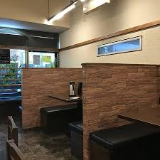

千種本店
◆住所◆
愛知県名古屋市東区筒井3-34-12マルイチビル1F
◆営業時間◆
11:30～13:30（ランチ） 17:00～22:30br ※22:00ラストオーダー ※ご予約はお一人様より承っております。
◆定休日◆
第3月曜日（正月を除く） ※年末年始・お盆の営業は予めご確認ください。
◆TEL◆ 052-936-9807
ご予約はネットからも受け付けております


今池店
◆住所◆
愛知県名古屋市千種区今池4丁目13-10
◆営業時間◆
日曜～木曜日 17：00～23：50まで営業 金曜・土曜 17：00～1：50まで ※ご予約はお一人様より承っております。
◆定休日◆
火曜日 ※年末年始・お盆の営業は予めご確認ください。
◆TEL◆ 052-731-6860
ご予約はネットからも受け付けております

久屋店
◆住所◆
愛知県名古屋市東区泉一丁目23-1 ボイスビル1F
◆営業時間◆
11:30～13:30（ランチ） 17:00～22：30 ※22:00ラストオーダー ※ご予約はお一人様より承っております。
◆定休日◆
日曜日 ※年末年始・お盆の営業は予めご確認ください。
◆TEL◆ 052-961-2522
ご予約はネットからも受け付けております
